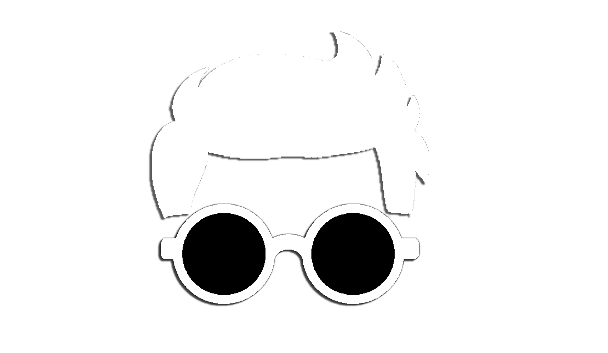

<nav class="navbar bg-dark">
    <div class="container">
      <a class="navbar-brand" href="#">
        ONUR OPTİK
      </a>
      <button class="btn btn-outline-success btn-success" style="font-size: 25px; color: black;" routerLink="login">Giriş Yap</button>
    </div>
  </nav>

   
<div class="main-wrapper">
    <div class="signboard-wrapper">
    <div class="signboard">Bakımdayız</div>
    <div class="string"></div>
    <div class="pin pin1"></div>
    <div class="pin pin2"></div>
    <div class="pin pin3"></div>
    </div>
    </div>   
    <div class="aciklama">
        <h2>Bakım çalışmaları devam ediyor.</h2>
        <p>Lütfen daha sonra tekrar ziyaret edin.</p>
    </div>     